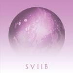

School of Seven Bells SVIIB
(Vagrant Records)
The death of a partner isn't just devastating in its immediacy, but in the impact it has on those left behind for the rest of their lives. In Alejandra Deheza's case, she lost her self-described soulmate and School of Seven Bells co-founder Benjamin Cutis to lymphoma in 2013 at the far too young age of 35. Before his diagnosis, the band was at the height of their powers, releasing the excellent Ghostory in 2012 and working on what would turn into SVIIB immediately afterwards. After Curtis' death, Deheza worked to finish the record, dedicating the band's final statement to him. And what a statement it is, reflecting all aspects of the type of relationship only a few people have.
Ablaze and Open Your Eyes are songs about two people supporting each other through an incredible challenge, with a refusal to be dragged down by the weight they must carry. The former starts where Ghostory left off, with a pulsing synth rhythm and Deheza's ethereal voice swirling together in an uplifting, danceable trance. On Open Your Eyes, gentle keys float alongside a handclap rhythm and Deheza's rapid-fire lyrics. "I know your heart is broken/And you've been weeping/But I've been waiting here/Patiently for too long," Deheza says, expressing both her and Curtis' frustration at the hand they've been dealt, with his treatment often keeping him out of the studio.
On A Thousand Times More, Deheza expresses the limits of their relationship though, knowing that it may not be enough to save Curtis. "I wish there was a way/To reassure your heart/Now I can promise anything/Except to say this hurt will pass," she sings, with a simple, low-key riff by Curtis pushing up against snappy percussion and skyward synths.
While every song here makes note of the relationship at the center of School of Seven Bells, this is not a downbeat album. Instead, it's a record that showcases everything the band is about. On My Heart is weirder and funkier than nearly any other track, with an unbalanced synth riff line that instantly captures your attention. Signals sounds like a futuristic take on 90s R&B, until the chorus kicks in with huge guitars and a sparkling synth line.
The album concludes with two songs that perfectly reflect the different sides of a friendship that ends too soon. Confusion is the only song that was fully written after Curtis' diagnosis. With slow, mournful synths, Deheza sings about clouds coming in, her voice fragile and tired. The song's title and tone fits beautifully, expressing the constant questioning that goes on when someone has such a destructive illness.
SVIIB ends though on a note of hope and happy memories. Written before Curtis' diagnosis, This Is Our Time contains one of the strongest melodies the band has come up with, an empowering cascade of spacey keys. It's a song of togetherness, against any and all obstacles or enemies. "Our time is indestructible," Deheza defiantly sings, her joy and confidence in her relationship with Curtis overwhelming all else. It's an incredible end to a memorable record that showcases a relationship through the good times and bad. No matter what happens, Curtis and Deheza always have each other, and nothing, not even death, can stand in the way of that.
29 February, 2016 - 04:00 — Joe Marvilli